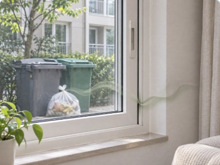
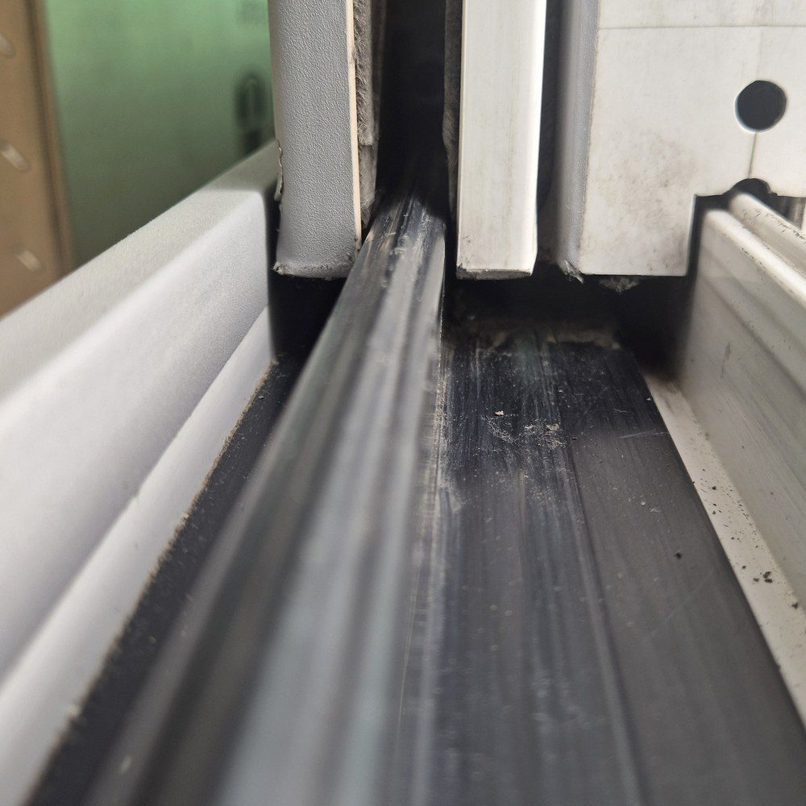
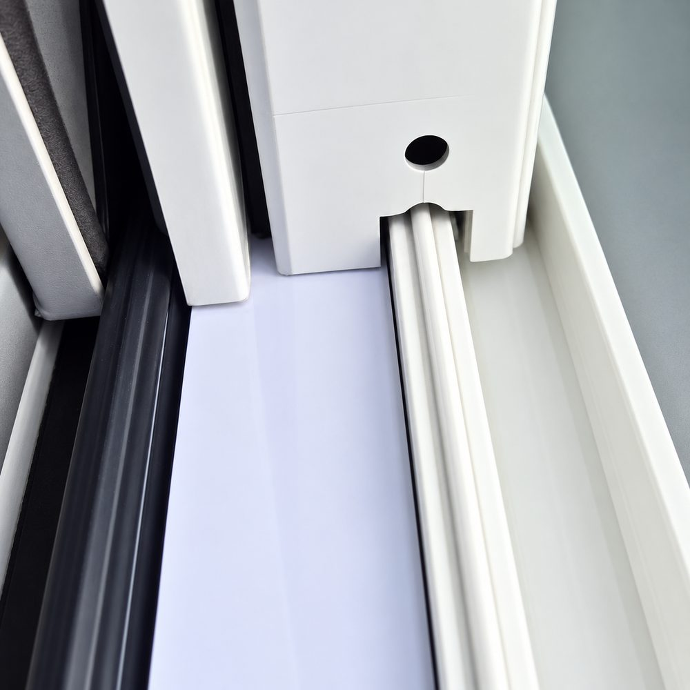
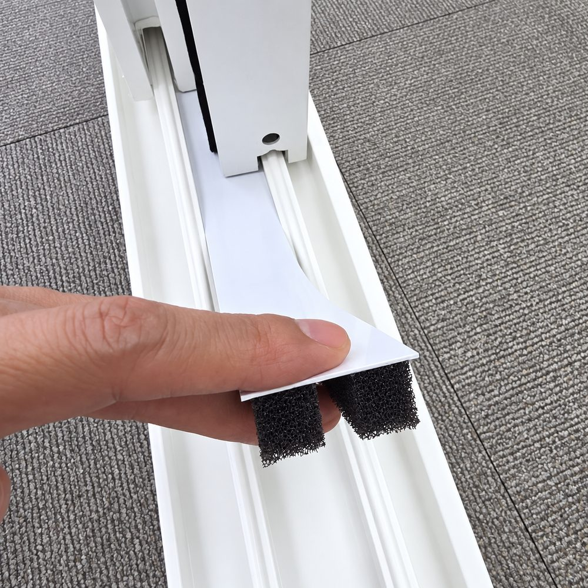
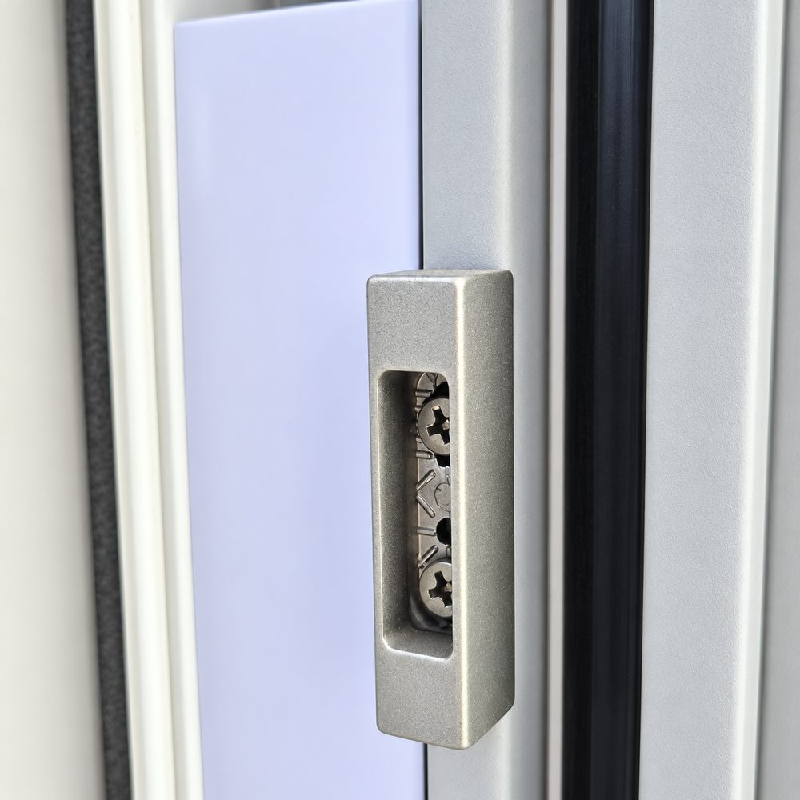
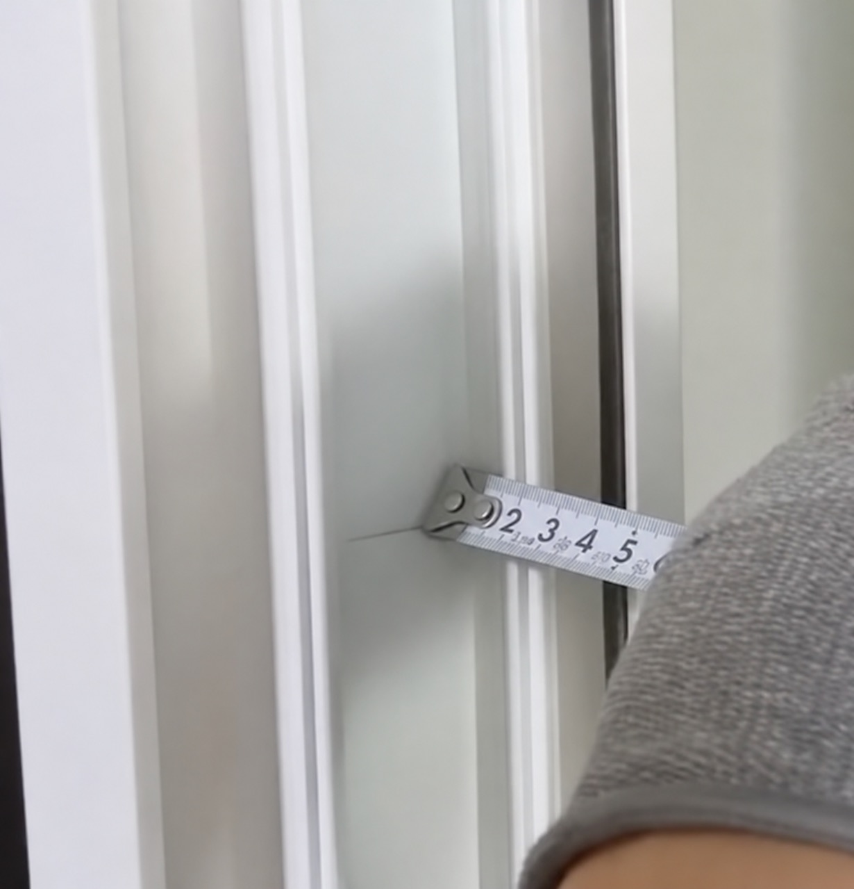
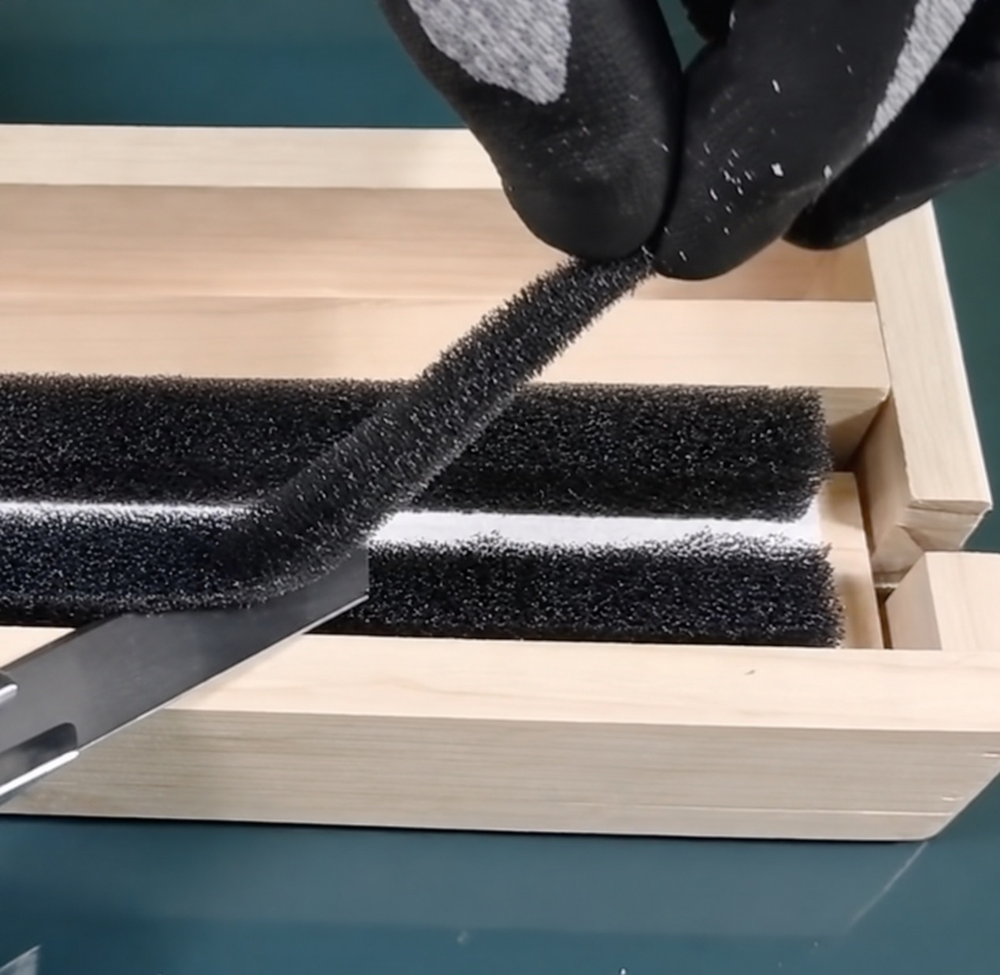
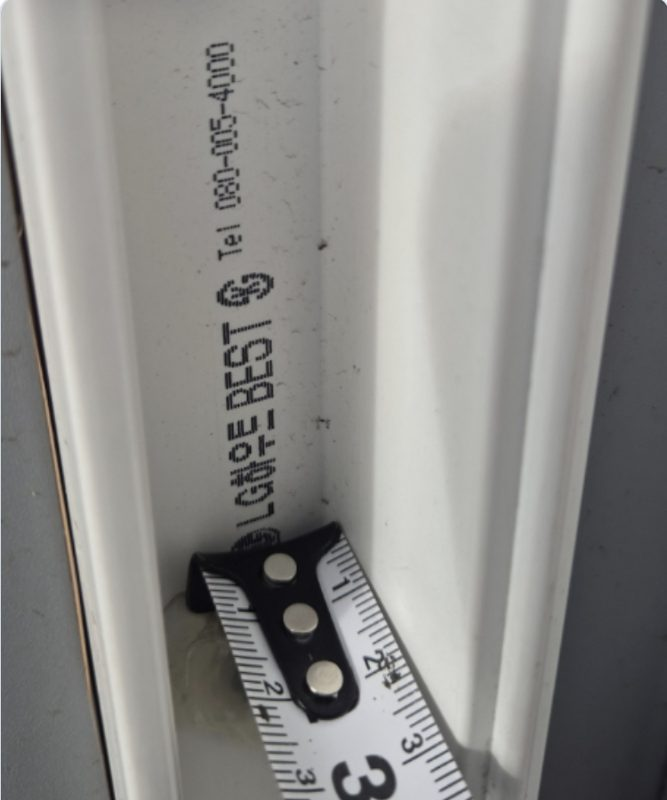
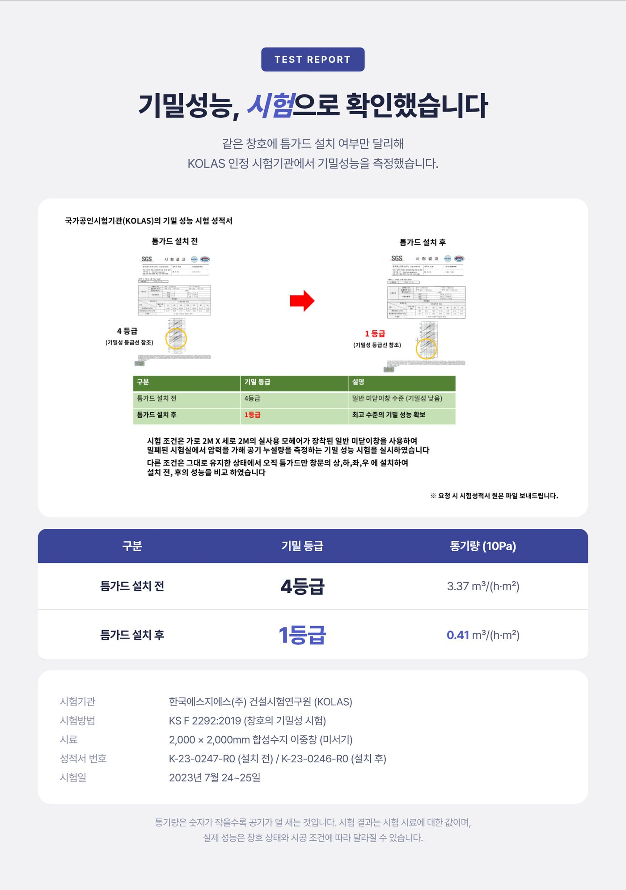
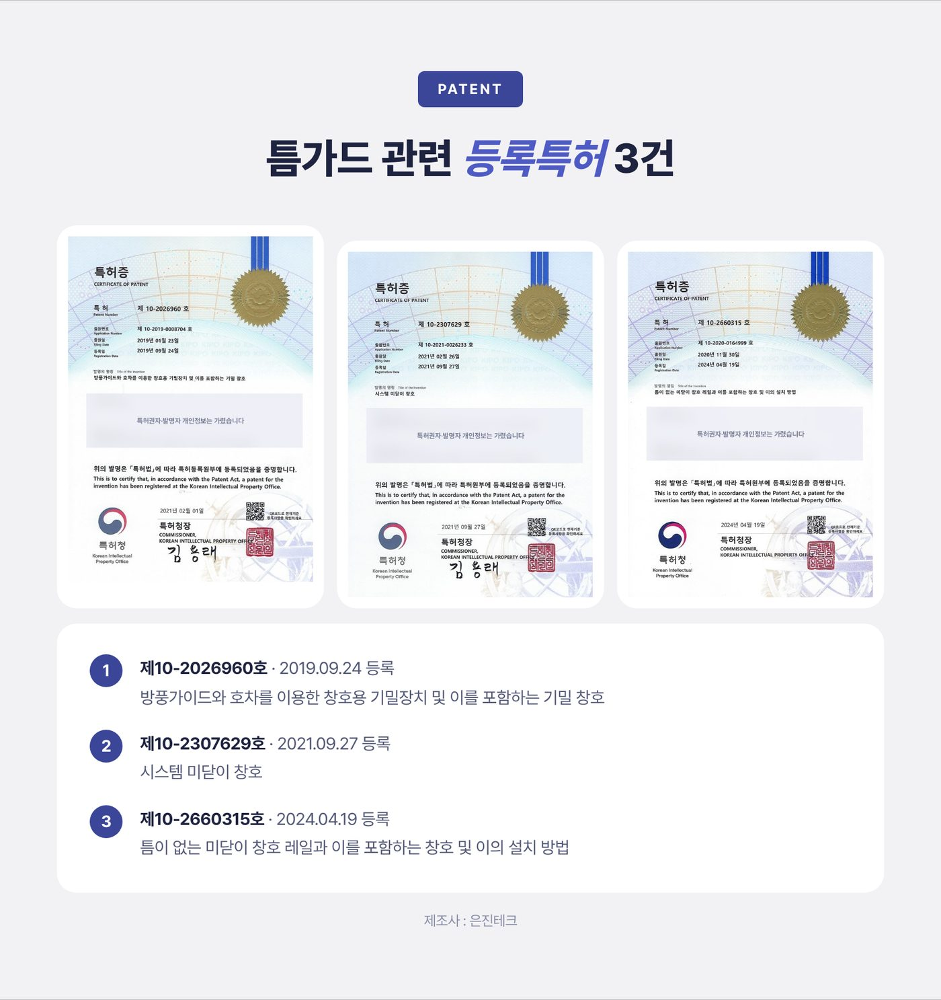

냄새 차단
시공 전
시공 후창틈만 제대로 막아도
난방비 절반은 줄어요
58%↓
1월 난방비
(실사용 세대)
(실사용 세대)
하루
철거 없이
당일 시공
당일 시공
1/13
샷시 교체
대비 비용
대비 비용
가장 궁금한 것 ① 진짜 난방비가 줄어요?
5년간 도시가스 요금은
5년간 도시가스 요금은
40% 상승,
틈가드 설치 후 난방비는
약 58% 감소!
도시가스 기준요금
+40%
713원 → 998원/㎥
(2019 → 2025년)
(2019 → 2025년)
1월 난방비
−58%
147,230원 → 평균 61,740원
(설치 전 → 설치 후 5년)
(설치 전 → 설치 후 5년)
14.7만
6.5만
5.6만
4.1만
6.8만
7.9만
2019713원
2021654원
2022655원
2023950원
2024938원
2025998원
막대: 1월 난방비 · 주황 숫자: 도시가스 기준요금
가스비가 올라도 설치 후 1월 난방비는 설치 전의 절반 수준을 유지했어요.
※ 33평 실거주 1개 세대 고지서 기준. 날씨·난방 습관에 따라 달라질 수 있어요.
틈가드 시공 후
난방비 절약에,
난방비 절약에,
이런 효과까지 따라와요
※ 체감 효과는 창 상태와 유입 경로에 따라 달라질 수 있어요.
가장 궁금한 것 ③ 샷시·모헤어 교체랑 뭐가 달라요?
10년 넘은 구축 샷시,
10년 넘은 구축 샷시,
통째로 바꾸기 부담스럽죠?
샷시 전체 교체
약 1,200만 원
- 바람 막는 정도
- 기밀 1등급
- 겨울 난방비
- 약 60~65% ↓
- 난방비 절감액(10년)
- 약 380~420만 원
- 시공비 회수
- 10년에 약 1/3만
효과는 좋지만 비용과 철거 부담이 커요.
샷시 교체의 약 1/13 비용
틈가드 시공
약 80~110만 원
- 바람 막는 정도
- 기밀 1등급
- 겨울 난방비
- 약 50~58% ↓
- 난방비 절감액(10년)
- 약 320~350만 원
- 시공비 회수
- 약 3번째 겨울에 회수
샷시는 그대로, 바람이 드는 틈만 막아요.
모헤어(털)만 교체
약 70~100만 원
- 바람 막는 정도
- 기밀 4등급 수준
- 겨울 난방비
- 약 10~15% ↓
- 난방비 절감액(10년)
- 약 60~90만 원
- 시공비 회수
- 5~7년마다 재시공
털 사이에 틈이 남을 수 있어요.
※ 33평 실거주 기준 추정치이며 집마다 달라요.
알고 나면 이해돼요
창문 꼭 닫았는데
창문 꼭 닫았는데
왜 바람이 들어올까요?
이렇게 시공됩니다
위·아래·양옆,
위·아래·양옆,
네 면을 재고 맞춰 끼워요





틈을 mm 단위로 재고 현장에서 잘라 맞춰요.
비용
우리 집은 얼마쯤 들까요?
제품·재단·시공 포함 1m당 15,000원
20평대창 약 6~8틀
샷시 교체
약 900만
틈가드
60~80만
모헤어 교체
비슷한 수준
틈가드 시 난방비 연 약 24~26만 원 절감 예상
30평대창 약 8~10틀
샷시 교체
약 1,200만
틈가드
80~110만
모헤어 교체
70~100만
틈가드 시 난방비 연 약 33~35만 원 절감 예상
40평대 이상창 약 10~13틀
샷시 교체
약 1,600만
틈가드
110~150만
모헤어 교체
비슷한 수준
틈가드 시 난방비 연 약 43~47만 원 절감 예상
- 최소 시공 금액 60만 원 (약 40m 기준)
- 방문 실측비 1만 원 — 시공하면 전액 차감
- 실측 전 취소는 실측비 전액 환불, 실측 후 취소 시 환불되지 않아요
- 현재 서울·경기 지역만 시공 가능 · 최종 금액은 실측 후 확정
자가가 아니라서 시공비가 부담된다면?
간편 상담·방문상담 신청하기
단기 거주라면 백업제 셀프 시공도 확인해 보세요.
[영상 링크] 백업제 셀프 시공 영상 보기 →
진행은 이렇게
창 사진 몇 장이면 시작돼요
- 1문의 · 전화나 상담 신청서로
- 2사진으로 1차 확인 · 창 상태와 위치 체크
- 3방문 실측 · 틈을 mm 단위로 측정
- 4금액·일정 확정 · 시공 길이로 정확히
- 5시공 · 하부 → 양옆 → 상부
- 6점검 후 1년 보증 · 시공 하자 무상 보수
미리 찍어 두면 좋은 사진
- 창 전체 — 닫힌 모습, 열린 모습
- 바람 드는 곳 가까이 — 레일, 창 옆면
- 창 대략 크기, 창 개수, 사는 지역
시공 후 문제가 생기면
시공일로부터 1년 무상 보수해 드려요. 010-2190-0192
더 꼼꼼히 확인하고 싶다면
공인 시험성적과 특허
같은 창, 틈가드만 달리해서 시험했어요
설치 전
4등급
통기량 3.37
설치 후
1등급
통기량 0.41
통기량이 적을수록 바람이 덜 새요. 한국에스지에스(주) 건설시험연구원 · KS F 2292:2019

관련 등록특허 3건
- 제10-2026960호 (2019.09.24)
방풍가이드와 호차를 이용한 창호용 기밀장치 - 제10-2307629호 (2021.09.27)
시스템 미닫이 창호 - 제10-2660315호 (2024.04.19)
틈이 없는 미닫이 창호 레일과 설치 방법

제조사: 은진테크 · 시험 결과는 해당 시료 기준이며 실제 성능은 창 상태에 따라 달라질 수 있어요.